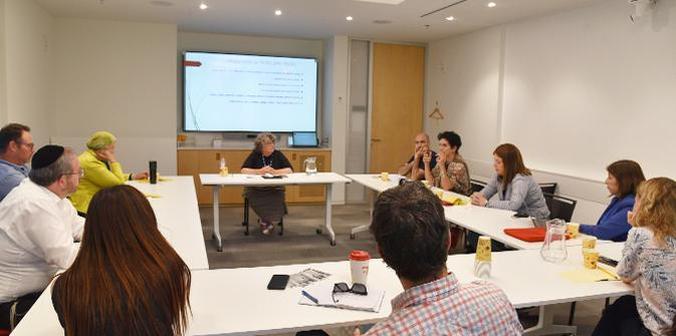
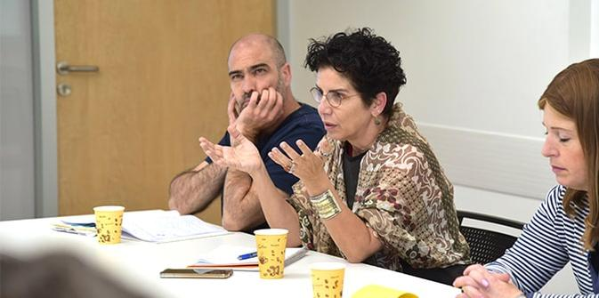
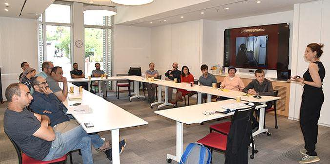

הקבוצה של ד"ר ג'וליה צ'ייטין ביום הכשרת הסגלים
בתקופה האחרונה נראה כי הדבק המחבר את החברה הישראלית מאבד מחוזקו בתהליכים מואצים, והמגזריות והמחנאות מתעצמים. אך במקביל "צצות" גם יוזמות אזרחיות רבות, המחפשות את הדרכים להימנע מקרעים שאינם ניתנים לאיחוי. על רקע זה התכנסנו במהלך חודש מאי חברי סגל וצוות מכון מנדל למנהיגות ליום למידה וחשיבה – "כיצד מאחים את הקרעים?" המפגשים במהלך היום יוחדו לתפקידו של המכון ולהשפעתו בהתמודדות עם המציאות המקוטבת בישראל, ומטרתו הייתה לעורר חשיבה בקרב אנשי הסגל בתוכניות המכון בנוגע לתפקידה של מנהיגות בחברה משוסעת ולשאלה כיצד אפשר לקדם תהליכי איחוי והידברות בין חלקי החברה הישראלית.
השיטה במוקד היום הייתה "הרחקת עדות": הסתכלות על מקרי בוחן בעולם של חברות שבהן ישנם מתחים פנימיים חריפים וניסיון להבין כיצד התמודדו עמם. זאת במטרה לקדם את ההבנה ולהרחיב את המבט על האפשרויות העומדות לפנינו. במהלך היום התפצלו המשתתפים לשלוש קבוצות, בהנחיית מומחים בתחומי יצירת חיבורים בחברות שסועות, יצירת פיוס ושלום, צדק ושוויון.
ד"ר אליק אייזקס העביר את הסדנה "יצירת חיבורים בחברה שסועה – מפילוסופיה למעשה". אייזקס, יליד סקוטלנד, הוא מנהל שותף של "שיח שלום" ומרצה באוניברסיטה העברית, העוסק בממשקים ובמתחים בין פילוסופיה מערבית למחשבה יהודית בנושאים של שלום, זהות, פילוסופיה פוליטית ותאולוגיה. לדברי אחד המשתתפים ביום הלימוד, "בעיניי הייתה מעולה דווקא הבחירה לעשות את זה דרך הסתכלות רחוקה ולהרחיק עדות. זה שירת מאוד את המטרה, כי זה מתנגן כל הזמן ברקע אבל דווקא הייתה הזדמנות לדבר על הדברים פתאום מפרספקטיבה רחוקה יותר".

יעל הס, מנהלת מכון מנדל למנהיגות, ביום הכשרת הסגלים
ד"ר ג'וליה צ'ייטין עסקה ב"תהליכי פיוס – מה ניתן ללמוד מתהליכי פיוס בעולם ומה אנחנו צריכים לעשות כאן, בארץ". צ'ייטין היא פסיכולוגית חברתית המתמחה במחקר איכותני וב"בניית שלום", המגדירה עצמה "חוקרת-אקטיביסטית". מחקריה, שאת חלקם הציגה בהרצאה, מתמקדים בין היתר בהשפעות ארוכות הטווח של השואה והסכסוך הפלסטיני-ישראלי על הקורבנות וצאצאיהם. בהרצאה היא עסקה בין היתר בספרה השישי, שהיא כותבת בימים אלו, שבו היא מתמקדת בקשר בין נרטיבים אישיים הקשורים לרצח עם (בעיקר השואה) ולמלחמות עיקשות (בעיקר הקונפליקט הישראלי-פלסטיני) לבין פיוס ובניית שלום לעומת חסימת שלום. לדברי אחת המשתתפות, "הבנתי שצריך אמון וצריך לבנות שיח כן בינינו, ובתוך התוכניות".
ד"ר סיגל הורוביץ, דוקטור למשפטים המומחית במשפט בינלאומי ובצדק מעברי, עסקה בהרצאתה ב"צדק מעברי – איחוי חברות שסועות עם עבר טראומטי". הורוביץ, שעבדה כמשפטנית בבתי הדין הבינלאומיים של האו"ם ועסקה במלחמות אזרחים, ברצח עם ובלוחמה בשחיתות, פיתחה קורסים שלוקחים את הסטודנטים לאזורי קונפליקט כמו רואנדה דרך התנסות בשטח.
הרצאות אלו נועדו ליצור מבט "מורחק" על קונפליקטים קרובים, כאמור באמצעות השוואה ביניהם לבין קונפליקטים בעולם שבהם לכאורה אין למשתתפים ולמשתתפות מניע לאחוז בעמדה מקובעת מראש, מכיוון שאינם מעורבים בהם באופן פעיל.
בסיכום היום אמר אחד המשתתפים: "בעיניי זה היה היום הכי טוב שאפשר לעשות. ממש הייתה שקיעה לתוך הנושא. הרגשתי שההרצאות, והרחקת העדות, נתנו אפשרות להקשיב לתאוריה, והעיבוד שלאחר מכן באמת סיפק אפשרות לעבוד על הדברים". משתתפת נוספת העלתה אתגר להמשך: "מתוך היום עלה האתגר, איך לתרגם את השיחה והרעיונות לתוך פרקטיקה מעשית של פיתוח למידה ועשייה מקצועית?"

הקבוצה של ד"ר סיגל הורוביץ ביום הכשרת הסגלים
{kind=link}
{kind=link}
{kind=link}